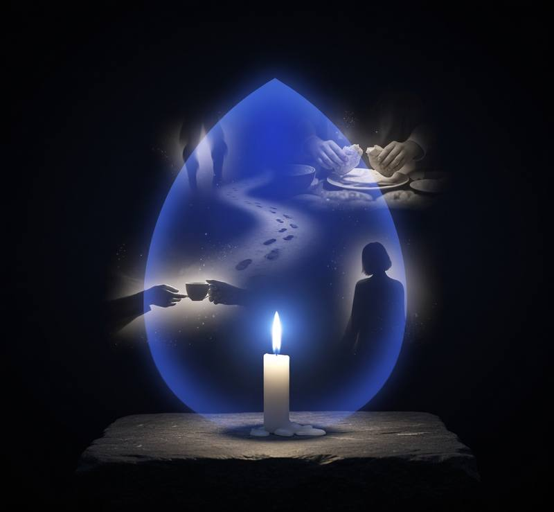
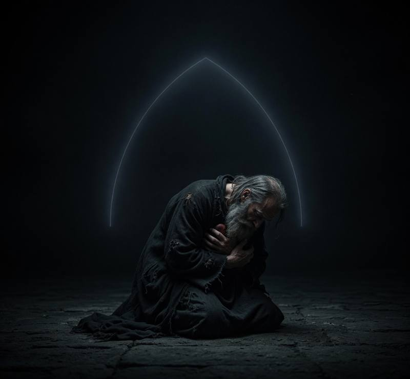
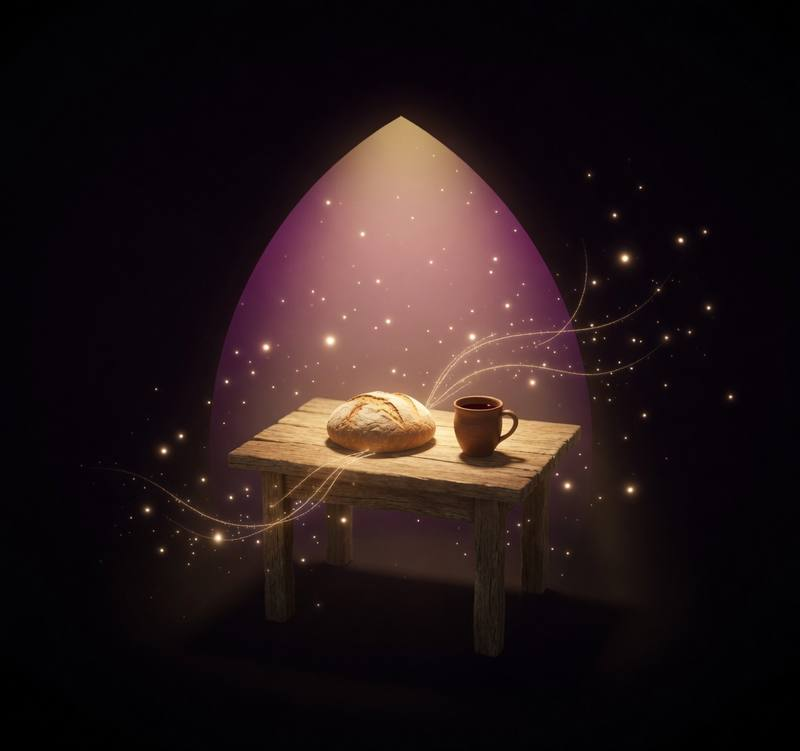

"The goal is acquisition of the Holy Spirit through stillness."
-- St. Seraphim of Sarov
Session LengthRecord your own voice. It plays after the monastery bell opens the session.
Plays through the speaker each time you tap a thought away. Choose a Desert Fathers text or record your own voice.
Load monastery bell file in Settings ⚙
Your session will begin in a moment.
Thoughts will come. That is not failure.
Tap each time a thought arises.
Name it -- then let it pass.
"It is best to learn to silence the faculties and to cause them to be still so that God may speak."
-- St. John of the Cross
Slowly. Gently.
Carry this stillness with you into the world.
The bell will close the practice.
Session Complete
Total thoughts noticed during stillness
"Do not be surprised if you fall every day; do not give up, but stand your ground courageously."
-- St. John Climacus
Sacred Reading · Lectio Divina
Before we
open the text.
"Even before we open the text we allow ourselves to come under the influence of what we are about to read."
-- Fr. Michael Casey, O.C.S.O.
Take a breath. Let the noise of the day settle. You are not reading to complete a task or gather information. You are reading to make contact with God. The text will flow over you -- slowly -- until something catches. That is not your doing.
"Open my eyes, that I may behold wondrous things out of your law."
-- Psalm 119:18
Choose your passage
"The Gospels are our most direct means of access. You can strike gold very quickly in them." -- Fr. Casey
Meditatio · Meditation
The word
that found you.
"It is a bit like the medical procedure known as palpation -- the physician pokes and pushes, and if there's no response, he moves on. However, if you yelp, he knows there's something there." -- Fr. Casey
"From the time of Origen, three levels of meaning have been distinguished -- an echo in the mind, in the conscience, and in the spirit. These are not outcomes we manufacture, but they follow the workings of grace." -- Fr. Casey
Oratio · Prayer
Let your response
become prayer.
"Prayer is the devoted turning of the heart to God for the removal of evil and the acquisition of good." -- Guigo II
Your word
--
Claude generates one question -- never two. Requires API key in Settings ⚙
Contemplatio
"Contemplation is the elevation of the mind suspended in God, tasting the joys of eternal sweetness."
-- Guigo II, Ladder of Monks
No more words are needed. Rest here.
Lectio Complete
Closing Prayer
Gathering from your session…


Jesus Prayer
Lord Jesus Christ,
Son of God,
have mercy on me, a sinner.
Lord Jesus Christ, Son of God,
have mercy on me, a sinner.
The prayer the hesychasts prayed without ceasing · Let it breathe itself

Loading tonight's question…
The Companion
A voice from the Desert Fathers
"What is it you are actually looking for?"
The Fathers are listening…
From the desert, slowly.
The Liturgy of the Hours
Sing the Hours · Paul Rose
No streaks. No guilt. A mirror of what you've chosen to become.
Write freely
Today's Practice
Deeper · The Cross
Theological investigation · Catechism-grounded
"Is there a word of Christ that has quietly frightened you -- one you've returned to, unable to fully set it down?"
Searching the tradition…
CCC · Philokalia · Desert Fathers
Night Watch · 2–4am
This hour appears between 2 and 4am only.
For Your Parish
Church Posters
Help others find Still. Print and post in your parish bulletin board, narthex, or chapel.
↓ Download PosterRetreat & Monastery
Abbey of Gethsemani -- Trappist, KY
Home of Thomas Merton. One of the most storied monasteries in America, offering silent retreats in the Cistercian tradition.
I've made retreat here.
Mepkin Abbey -- Moncks Corner, SC
A Trappist monastery on the Cooper River offering retreats in a setting of extraordinary beauty and quiet.
In the span of five years I spent time at this monastery discerning monastic life. I've also been on retreats here since.
Monastery of Christ in the Desert -- Abiquiú, NM
Benedictine monastery set in a remote canyon -- one of the most beautiful retreat settings in America.
Recommended Reading
Deeper · Christology
Fully Human, Fully Divine
Michael Casey
Masterfully weaves theology and contemplative spirituality into an interactive guide that reveals how embracing Christ as both fully human and fully divine transforms our own journey toward union with God.
Lectio Divina
Sacred Reading
Michael Casey
The clearest modern guide to Lectio Divina -- what it is, why it works, and how to let Scripture read you.
Amma Sophia · Mysticism
Evelyn Underhill: The Best Works
Evelyn Underhill
The woman who introduced a generation to mysticism -- Practical Mysticism alone is worth the price.
Spiritual Autobiography
Diary of Saint Maria Faustina Kowalska
St. Faustina Kowalska
One of the most intimate records of interior prayer ever written -- raw, honest, and quietly devastating.
Contemplative Sitting · Deeper
The Interior Castle
St. Teresa of Avila
The map of the soul's journey toward God, drawn by someone who made the journey herself.
Contemplative Sitting
Thoughts Matter
Mary Margaret Funk
A Benedictine abbess on the thoughts that derail prayer -- and how the Desert Fathers learned to handle them.
The Examen, The Guide
The Sinner's Guide
Venerable Louis of Granada, O.P.
With unflinching honesty, Louis of Granada lays bare the misery of a life enslaved to sin -- and the incomparable joy, peace, and freedom of living for God. He meditates on the Four Last Things and the beauty of the virtues, making it an ideal companion for honest self-examination and deeper contemplative prayer. Perfect for anyone seeking real conversion of heart.
Community
Follow @stillcommunity
Join the Still community on X -- reflections, updates, and conversations on the contemplative life.
Meet the Guides
Amma Sophia
Amma Sophia, when I first contemplated a life with God alone, it felt as if I stepped into eternity itself. Everything shifted. How can I return to that hearing? How do I open myself so His voice becomes constant again?
Ah, beloved, you have not lost what you think you have lost. The silence you now meet is not God's absence -- it is God's deeper presence, beyond the sweetness that first drew you to prayer. The mystics call this the dark night, and it comes not as punishment but as invitation. Your soul is being prepared for a love that needs no feelings to sustain it. Can you trust that this silence, too, is holy ground?
Deeper
What is the single most important inner gesture that allows me to consent to this stripping and remain faithful in the barrenness -- not just enduring it, but truly cooperating with what God is doing in the depths?
You are asking the question that has torn at human hearts since Job sat in his ash heap. The Church teaches that God permits evil not because He lacks power to prevent it, but because He can draw greater good even from the worst evil (CCC 312). The Cross is not God's explanation for suffering -- it is His entrance into it. Rest here: the God who allows suffering is not distant from it -- He has taken it into His own heart.
The Companion
Father, I have found something beautiful and I ache for others to know it. Should I speak of it loudly so many may find it, or keep it hidden as the desert teaches?
A brother once came to Abba Poemen saying he had received a great grace in prayer and wished to tell others. The old man replied: A tree heavy with fruit bows its branches low and speaks not of its sweetness. But the barren tree stretches high and makes much noise in the wind. Let your prayer be like the deep well -- drawing others not by speaking of its depths, but by the sweet water that flows quietly from your transformed countenance.
Audio ambience: kevp888 / freesound.org (CC BY 4.0) · CRAFTCREST.com / freesound.org (CC BY 4.0)
The Chamber keeps silence now.
"You are a deep sea: the more I enter, the more I find."
Within you a conversation is already going on.
The Body, which does not lie -- it only asks.
Self-Love, which bargains, and always sounds reasonable.
The Soul, made to govern both in love.
Let each one speak.
Now let the body pray too.
Stand, or open your hands where you sit.
Take one slow breath, and let it be the Amen.
Some things are meant to be carried with another person -- a priest, a spiritual director, someone who loves you. The Chamber will keep your word here in the meantime, and the One who loves you is not waiting for you to be better before He listens. If you are in danger of harming yourself, please reach out now. In the US, call or text 988 -- someone is there at every hour.
{kind=link}